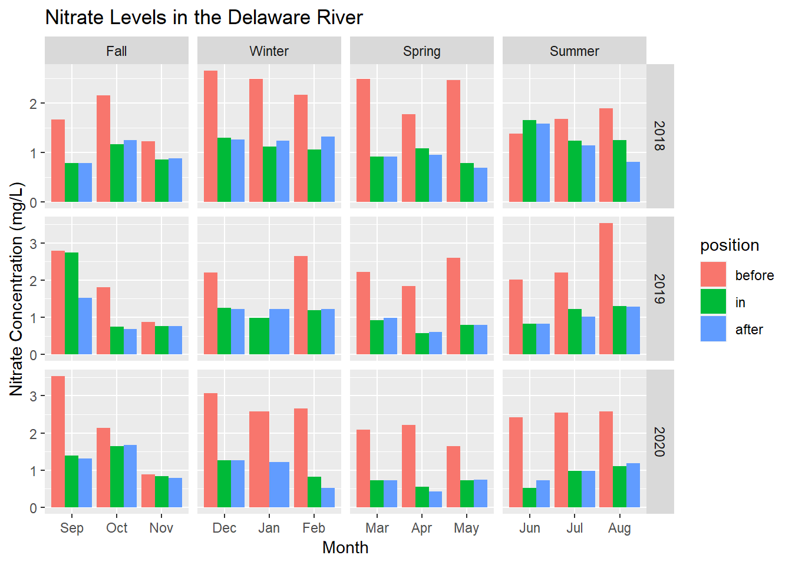
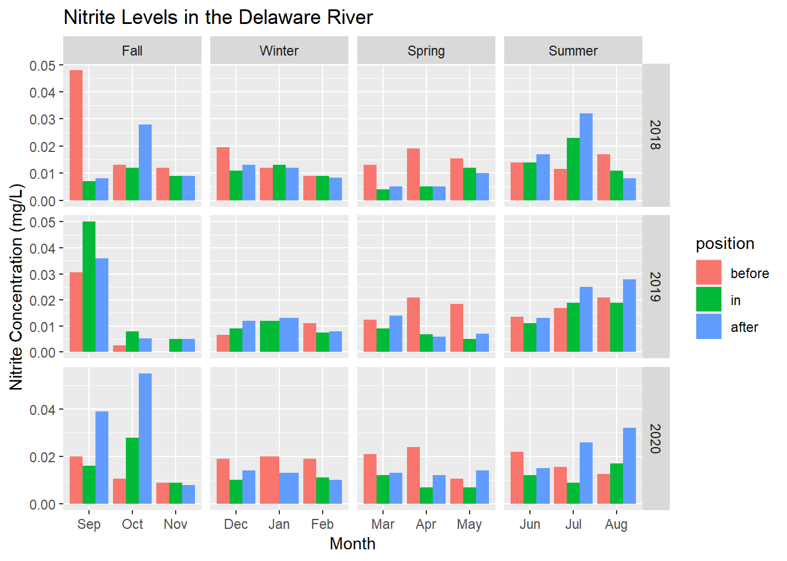
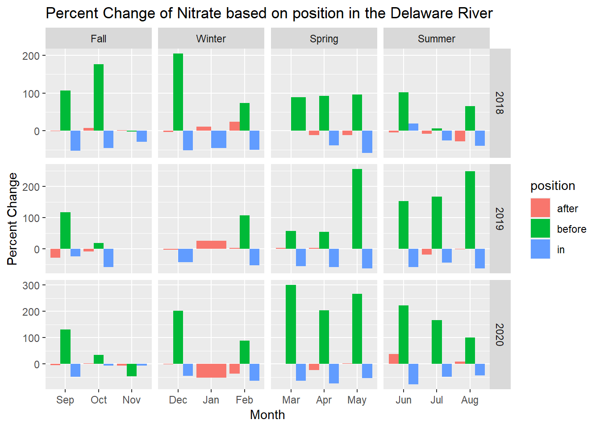
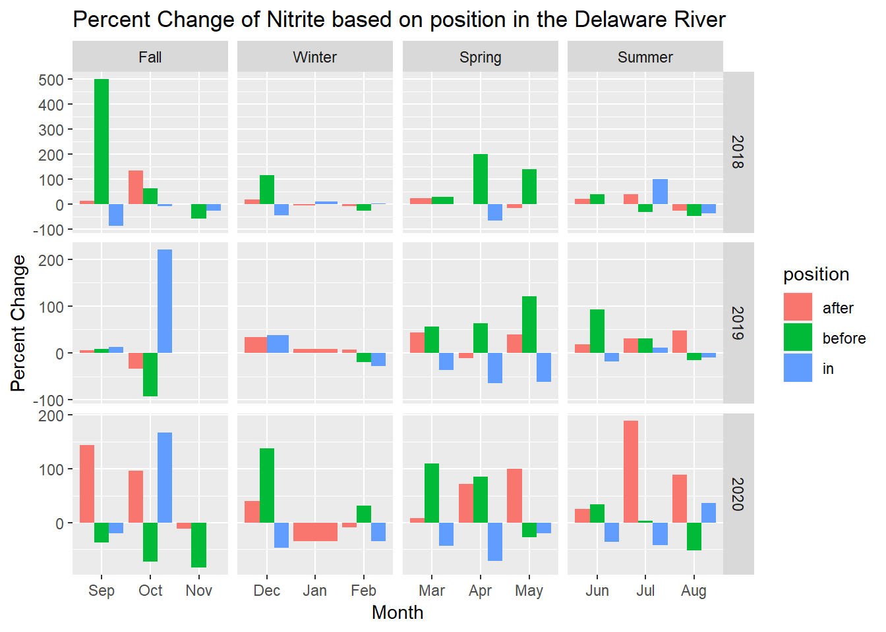
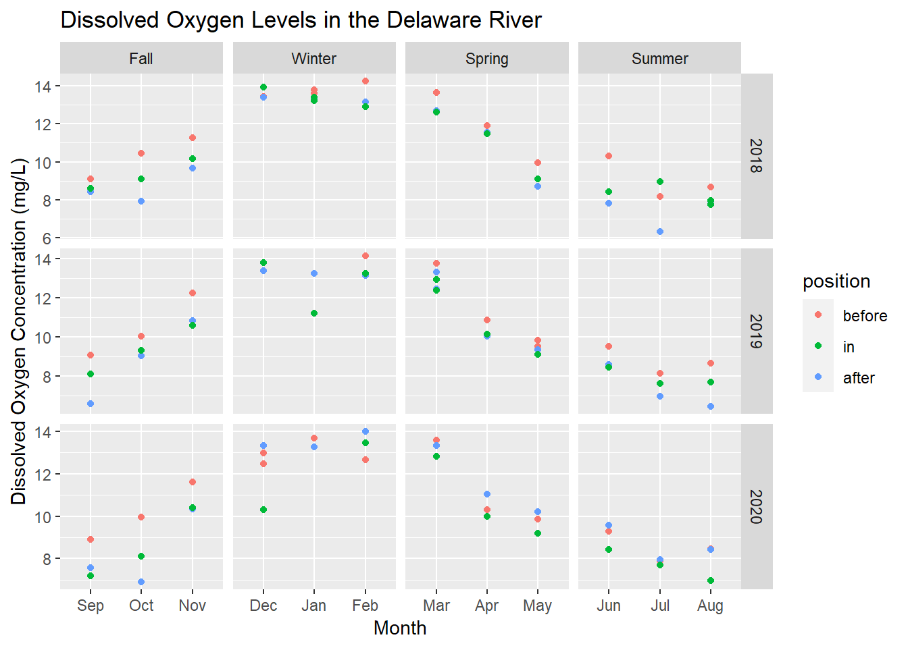
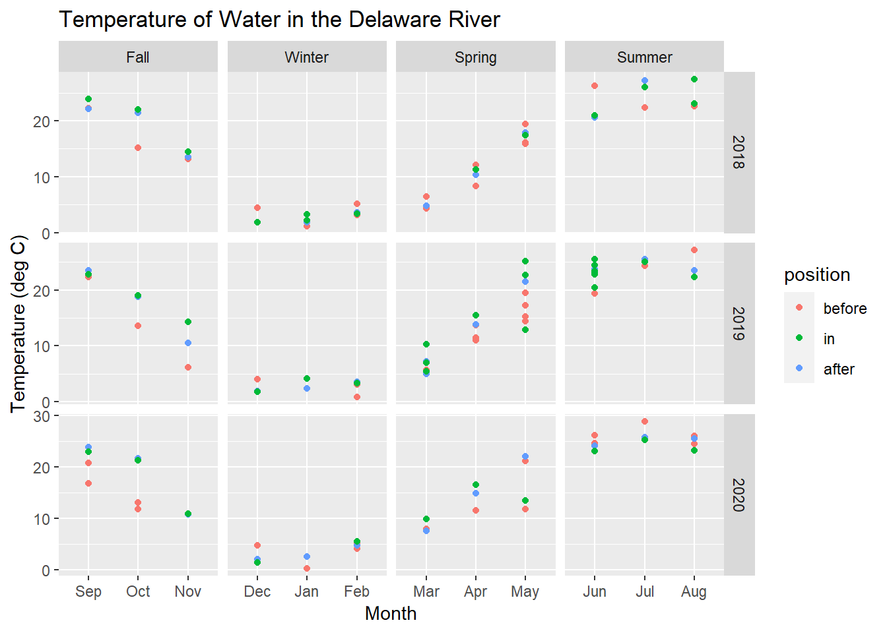
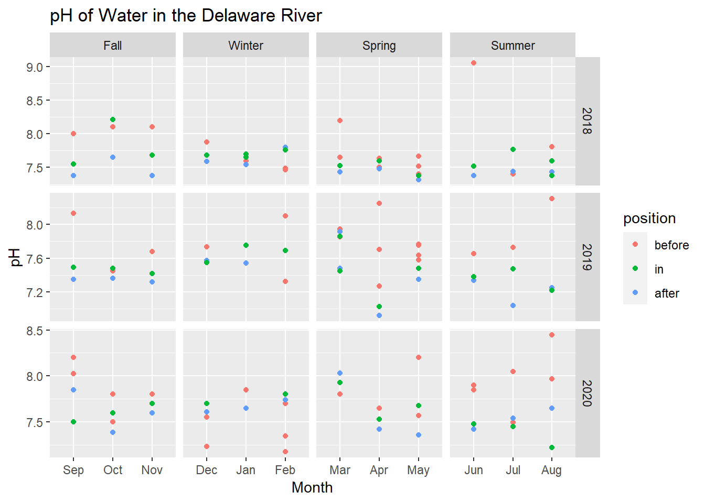
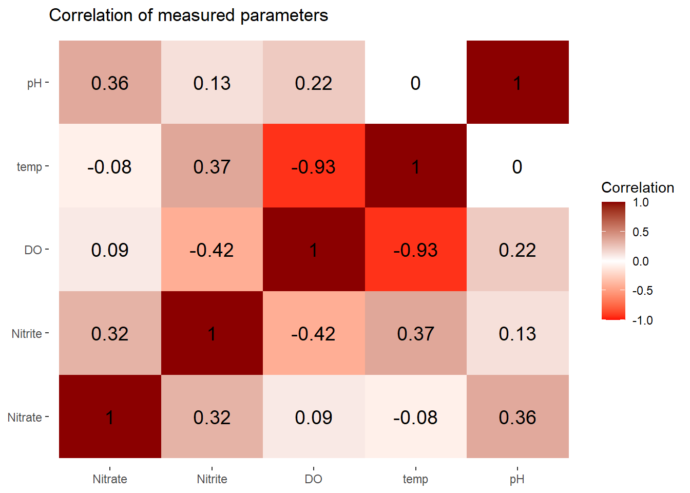

Chapter 4 Results
4.1 Nitrate Concentrations
Nitrate concentrations were quite similar throughout the year. When looking at the seasons, there is not one that stands out as having the highest nitrate concentrations overall between all the water years. In the 2018 water year, average nitrate concentrations were the highest in the winter and spring months. In the 2019 water year, average nitrate concentrations were the highest in August specifically and the second highest in September. In the 2020 water year, the highest average nitrate concentrations were found in September. The highest average nitrate concentration reported for the before position was in September of the 2019 water year with a value of 5.76 mg/L . The highest reported value of nitrate in the in position was 4.46 mg/L in September of 2019. For the after position, the highest average value was in October 2019 at 1.68 mg/L. The lowest avergae nitrate value reported was in February of the 2020 water year at 0.012 mg/L.
custom_order <- c('Sep',"Oct", "Nov", "Dec", "Jan", "Feb", "Mar", "Apr", "May", "Jun", "Jul", "Aug")
Total_Data$month <- factor(Total_Data$month, levels = custom_order)
Total_Data$position <- factor(Total_Data$position, levels = c("before", "in", "after"))
ggplot(Total_Data, aes(x = month, y = Nitrate, fill = position)) +
geom_col(position = "dodge") +
labs(title = "Nitrate Levels in the Delaware River", x = "Month", y = "Nitrate Concentration (mg/L)") +
facet_grid(water_year~ factor(season, levels = c("Fall", "Winter", "Spring", "Summer")), scales="free", space="free_x")## Warning: Removed 11 rows containing missing values (`geom_col()`).
Figure 2. Nitrate concentrations in mg/L for the Delaware River for the 2018 to 2020 water years color coded by the position along the Delaware River in reference to the wetlands. Facet grid was used to separate water year and seasons into individual graphs.
4.2 Nitrite Concentrations
Nitrite concentrations changed throughout the water years with the highest concentrations occurring in the fall and the lowest concentrations occurring in the winter months. It was found that generally in the fall, nitrite concentrations were the highest. The highest average nitrite concentration was 0.077 mg/L and it occurred at the in position in September of 2019. Overall, the month of September held the highest average nitrite concentration. The lowest concentration in nitrite occurred in October of 2018 in the before position at only 0.001 mg/L. Nitrite concentrations did not seem to change based on the monitioring location position in regards to the wetlands.
Total_Data$position <- factor(Total_Data$position, levels = c("before", "in", "after"))
ggplot(Total_Data, aes(x = month, y = Nitrite, fill = position)) +
geom_col(position = "dodge") +
labs(title = "Nitrite Levels in the Delaware River", x = "Month", y = "Nitrite Concentration (mg/L)") +
facet_grid(water_year~ factor(season, levels = c("Fall", "Winter", "Spring", "Summer")), scales="free", space="free_x")## Warning: Removed 22 rows containing missing values (`geom_col()`).
Figure 3. Nitrite concentrations in mg/L for the Delaware River for the 2018 to 2020 water years color coded by the position along the Delaware River in reference to the wetlands. Facet grid was used to separate water year and seasons into individual graphs.
4.3 Percent Change
#monthly values
in_monthly <- in_wetlands %>%
group_by(Nutrient, water_year, month) %>%
summarise(Result = mean(Result))%>%
mutate(position = rep('in'))## `summarise()` has grouped output by 'Nutrient', 'water_year'. You can override using the `.groups` argument.before_monthly <- before_wetlands %>%
group_by(Nutrient, water_year, month) %>%
summarise(Result = mean(Result)) %>%
mutate(position = rep('before'))## `summarise()` has grouped output by 'Nutrient', 'water_year'. You can override using the `.groups` argument.after_monthly <- after_wetlands %>%
group_by(Nutrient, water_year, month) %>%
summarise(Result = mean(Result))%>%
mutate(position = rep('after'))## `summarise()` has grouped output by 'Nutrient', 'water_year'. You can override using the `.groups` argument.Total_Data_new2 <- rbind(before_monthly, after_monthly, in_monthly) %>%
mutate(water_year = as.factor(water_year))wider <- pivot_wider(Total_Data_new2, names_from = Nutrient, values_from = Result, values_fn = {mean})
pos_order <- c("before", "in", "after")
# Convert month column to ordered factor
wider$month <- factor(wider$month, levels = month.abb)
# Arrange the data by year, month, and position
df_ordered <- wider %>%
arrange(water_year, month, match(position, pos_order))
pc <- df_ordered %>%
mutate(pcrate = (Nitrate - lag(Nitrate)) / lag(Nitrate) * 100) %>%
mutate(pcrite = (Nitrite - lag(Nitrite)) / lag(Nitrite) * 100)
pc$season <- ifelse(pc$month %in% c("Dec", "Jan", "Feb"), "Winter",
ifelse(pc$month %in% c("Mar", "Apr", "May"), "Spring",
ifelse(pc$month %in% c("Jun", "Jul", "Aug"), "Summer",
ifelse(pc$month %in% c("Sep", "Oct", "Nov"), "Fall", NA))))custom_order <- c('Sep',"Oct", "Nov", "Dec", "Jan", "Feb", "Mar", "Apr", "May", "Jun", "Jul", "Aug")
pc$month <- factor(pc$month, levels = custom_order)
pc <- pc %>%
na.omit()
ggplot(pc, aes(x = month, y = pcrate, fill = position)) +
geom_bar(stat = "identity", position = "dodge") +
labs(title = "Percent Change of Nitrate based on position in the Delaware River", x = "Month", y = "Percent Change") +
facet_grid(water_year~ factor(season, levels = c("Fall", "Winter", "Spring", "Summer")), scales="free", space="free_x", )
Figure 4. Percent change of Nitrate concentration for the Delaware River for the 2018 to 2020 water years. After represents the change from in to after, before is after of the previous month to before, and in is before to in. The percent change could not be plotted for before in themonth of January since there is no previous reference.
The largest percent change that occurs for nitrate is for the before position. The percent change for before represents the change from the after site to the before site. The large increase in percent change shows that the before positions have higher nitrate levels than the after. The lowest percent changes occurs for the in position which represents the change between the before and in position. Since this is a negative value it shows that as water travels from the before wetlands position to the in wetlands position, nitrate levels will decrease. There was a very small percent change that occurred between the in and after sites, and it varied between positive and negative values.
custom_order <- c('Sep',"Oct", "Nov", "Dec", "Jan", "Feb", "Mar", "Apr", "May", "Jun", "Jul", "Aug")
pc$month <- factor(pc$month, levels = custom_order)
ggplot(pc, aes(x = month, y = pcrite, fill = position)) +
geom_bar(stat = "identity", position = "dodge") +
labs(title = "Percent Change of Nitrite based on position in the Delaware River", x = "Month", y = "Percent Change") +
facet_grid(water_year~ factor(season, levels = c("Fall", "Winter", "Spring", "Summer")), scales="free", space="free_x", )
Figure 5. Percent change of Nitrite concentration for the Delaware River for the 2018 to 2020 water years. After represents the change from in to after, before is after of the previous month to before, and in is before to in. The percent change could not be plotted for before in themonth of January since there is no previous reference.
The percent change in nitrite is quite variable with no recognizable patterns. The highest percent change was 500% for before in September of 2018. The lowest however, was in October of 2019 with -93%.
4.4 ANOVA for Nitrate
There was a statistically significant change in nitrate concentrations as water moved through the wetlands. Specifically, the change between the before and after positions as well as the change in the before and in positions were statistically significant. However, there was no significant change in nitrate concentrations between the in and after positions. This would support the idea that as water travels through wetlands, nitrate levels would decrease. Thus meaning that wetlands act as a source for nitrate removal and can help improve water quality.
nitrate_new <- Total_Data_new %>%
filter(Nutrient == 'Nitrate') model <- aov(Result ~ position, data = nitrate_new)
summary(model)## Df Sum Sq Mean Sq F value Pr(>F)
## position 2 51.8 25.90 17.62 9.1e-08 ***
## Residuals 197 289.5 1.47
## ---
## Signif. codes: 0 '***' 0.001 '**' 0.01 '*' 0.05 '.' 0.1 ' ' 1TukeyHSD(model)## Tukey multiple comparisons of means
## 95% family-wise confidence level
##
## Fit: aov(formula = Result ~ position, data = nitrate_new)
##
## $position
## diff lwr upr p adj
## before-after 1.0843685 0.5611636 1.6075734 0.0000061
## in-after 0.1174873 -0.4913284 0.7263030 0.8919127
## in-before -0.9668812 -1.4614422 -0.4723202 0.00002094.5 ANOVA for Nitrite
Through the ANOVA test that was run for nitrite concentrations based on positions, it was found that there is no significant change as water travels through the wetlands. This would mean that wetlands in the Delaware River do not play a significant role in the removal of nitrites. Nitrite concentrations were quite variable throughout the seasons and water year. Due to this, there is a greater chance that the avergae value would be 0 depending on position as all water years and seasons were taken into account. To if it was possible that this could be an issue three more anova tests were created looking at each individual water year.
nitrite_new <- Total_Data_new %>%
filter(Nutrient == 'Nitrite')
model_rite <- aov(Result ~ position, data = nitrite_new)
summary(model)## Df Sum Sq Mean Sq F value Pr(>F)
## position 2 51.8 25.90 17.62 9.1e-08 ***
## Residuals 197 289.5 1.47
## ---
## Signif. codes: 0 '***' 0.001 '**' 0.01 '*' 0.05 '.' 0.1 ' ' 1TukeyHSD(model_rite)## Tukey multiple comparisons of means
## 95% family-wise confidence level
##
## Fit: aov(formula = Result ~ position, data = nitrite_new)
##
## $position
## diff lwr upr p adj
## before-after -0.001249318 -0.006102545 0.003603909 0.8156268
## in-after -0.003265372 -0.008740291 0.002209546 0.3379610
## in-before -0.002016054 -0.006614103 0.002581995 0.5548463nitrite_2018 <- nitrite_new %>%
filter(water_year == '2018')
model_rite18 <- aov(Result ~ position, data = nitrite_2018)
summary(model_rite18)## Df Sum Sq Mean Sq F value Pr(>F)
## position 2 0.000115 5.753e-05 0.739 0.482
## Residuals 57 0.004436 7.782e-05TukeyHSD(model_rite18)## Tukey multiple comparisons of means
## 95% family-wise confidence level
##
## Fit: aov(formula = Result ~ position, data = nitrite_2018)
##
## $position
## diff lwr upr p adj
## before-after -0.0005444169 -0.007559021 0.006470187 0.9809602
## in-after -0.0034778846 -0.011404662 0.004448893 0.5451753
## in-before -0.0029334677 -0.009468345 0.003601410 0.5301264nitrite_2019 <- nitrite_new %>%
filter(water_year == '2019')
model_rite19 <- aov(Result ~ position, data = nitrite_2019)
summary(model_rite19)## Df Sum Sq Mean Sq F value Pr(>F)
## position 2 0.000008 3.940e-06 0.025 0.976
## Residuals 57 0.009092 1.595e-04TukeyHSD(model_rite19)## Tukey multiple comparisons of means
## 95% family-wise confidence level
##
## Fit: aov(formula = Result ~ position, data = nitrite_2019)
##
## $position
## diff lwr upr p adj
## before-after 0.0004785714 -0.009469371 0.010426514 0.9926395
## in-after 0.0009936508 -0.009836297 0.011823598 0.9734969
## in-before 0.0005150794 -0.008666455 0.009696614 0.9900047nitrite_2020 <- nitrite_new %>%
filter(water_year == '2020')
model_rite20 <- aov(Result ~ position, data = nitrite_2020)
summary(model_rite20)## Df Sum Sq Mean Sq F value Pr(>F)
## position 2 0.000400 0.0002002 1.776 0.179
## Residuals 52 0.005861 0.0001127TukeyHSD(model_rite20)## Tukey multiple comparisons of means
## 95% family-wise confidence level
##
## Fit: aov(formula = Result ~ position, data = nitrite_2020)
##
## $position
## diff lwr upr p adj
## before-after -0.003801061 -0.01235022 0.004748100 0.5351273
## in-after -0.007846154 -0.01789261 0.002200301 0.1534218
## in-before -0.004045093 -0.01259425 0.004504068 0.4932303Even when looking at each water year on it’s own, the change in nitrite concentrations based position of the sample site was not statistically significant.
4.6 Dissolved Oxygen
Dissolved oxygen concentrations were the highest in the winter and spring seasons. Throughout the 2018 and 2019 water years, the before position had the highest dissolved oxygen concentration. In 2020, most of the winter through summer months had the highest dissolved oxygen concentrations occurring in the after position.
ggplot(Total_Data, aes(x = month, y = DO, col = position)) +
geom_point() +
labs(title = "Dissolved Oxygen Levels in the Delaware River", x = "Month", y = "Dissolved Oxygen Concentration (mg/L)") +
facet_grid(water_year~ factor(season, levels = c("Fall", "Winter", "Spring", "Summer")), scales="free", space="free_x", )## Warning: Removed 31 rows containing missing values (`geom_point()`).
Figure 6. Dissolved Oxygen concentrations in mg/L for the Delaware River for the 2018 to 2020 water years color coded by the position along the Delaware River in reference to the wetlands. Facet grid was used to separate water year and seasons into individual graphs.
4.7 Temperature
Temperature was the highest during the summer months and reached the highest point at 28.8 degrees Celsius in July of 2020. The lowest reported temperature was in 2020 as well but in January at 0.2 degress Celsius.
ggplot(Total_Data, aes(x = month, y = temp, col = position)) +
geom_point() +
labs(title = "Temperature of Water in the Delaware River", x = "Month", y = "Temperature (deg C)") +
facet_grid(water_year~ factor(season, levels = c("Fall", "Winter", "Spring", "Summer")), scales="free", space="free_x", )## Warning: Removed 3 rows containing missing values (`geom_point()`).
Figure 7. Temperature of water in degrees Celsius for the Delaware River for the 2018 to 2020 water years color coded by the position along the Delaware River in reference to the wetlands. Facet grid was used to separate water year and seasons into individual graphs.
4.8 pH
The average pH levels for the before wetlands sites were often higher than the in or after sites. pH reached it’s highest point at 9.12 in the before position in June for the 2018 water year. However, the pH reamined fairly neutral throughout all seasons and water year. The average pH in total was 7.3.
ggplot(Total_Data, aes(x = month, y = pH, col = position)) +
geom_point() +
labs(title = "pH of Water in the Delaware River", x = "Month", y = "pH") +
facet_grid(water_year~ factor(season, levels = c("Fall", "Winter", "Spring", "Summer")), scales="free", space="free_x", )## Warning: Removed 11 rows containing missing values (`geom_point()`).
Figure 8. pH for the Delaware River for the 2018 to 2020 water years color coded by the position along the Delaware River in reference to the wetlands. Facet grid was used to separate water year and seasons into individual graphs.
4.9 Correlation of Parameter
There was very little correlation between nitrate and the following parameters: dissolved oxygen, the temperature of water, pH, and nitrite concentrations. Furthermore, there was no correlation between nitrite, dissolved oxygen, temperature of water, and pH. The highest correlation was found between dissolved oxygen and temperature at -0.93. The second strongest correlation was -0.42 between nitrite and DO. This could be considered as a moderate negative correlation between the two measurements.
library(psych)
library(reshape2)
cols <- c("Nitrate", "Nitrite", "DO", "temp", "pH")
# compute the correlation matrix for the selected columns
cor_df <- round(cor(Total_Data[, cols], use = "pairwise.complete.obs"),2)
melted_cor <- melt(cor_df)
ggplot(data = melted_cor, aes(x=Var1, y=Var2, fill=value)) +
geom_tile() +
geom_text(aes(Var2, Var1, label = value), size = 5) +
scale_fill_gradient2(low = "red", high = "red4",
limit = c(-1,1), name="Correlation") +
theme(axis.title.x = element_blank(),
axis.title.y = element_blank(),
panel.background = element_blank())+
labs(title = "Correlation of measured parameters") 
Figure 9. Correlation graph of parameters studied (pH, DO, temp, pH, nitrate, and nitrite) for the Delaware River for the 2018 to 2020 water years. The darker red represents a high positive correlation while a brighter red show a strong negative correlation. White indicates that there is no correlation.